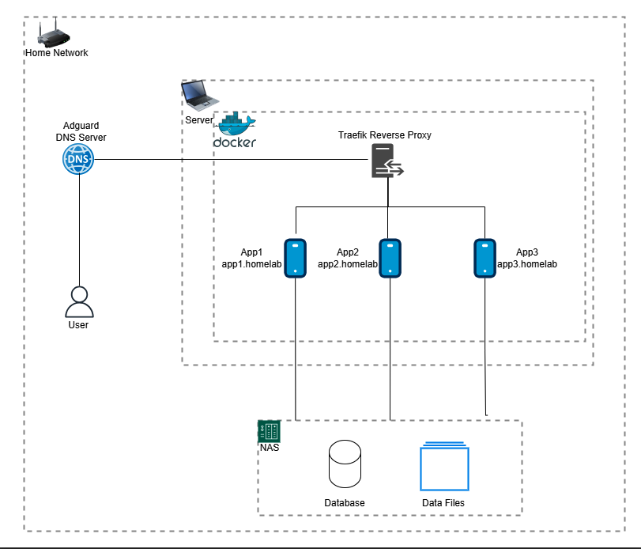

Selfhosted Design Architecture
This document outlines the design, setup, and implementation of my selfhosted architecture. The goal is to create a robust, scalable, and efficient environment for hosting various applications within a home lab setup.
Design Architecture Link to heading

Setup Link to heading
Home Network Link to heading
The foundation of this architecture is a reliable home network, managed by my home router.
User Devices Link to heading
Multiple user devices, such as PCs, smartphones, and tablets, are connected to this home network. These devices act as endpoints for interacting with the services hosted within the home lab.
Adguard DNS Server Link to heading
An Adguard DNS server is utilized to filter out unwanted ads and enhance privacy. It functions as a DNS resolver, blocking ads, trackers, and malicious websites, thereby providing a cleaner and safer browsing experience.
Server with Docker Link to heading
At the core of the setup is a server running Docker. Docker facilitates the deployment of containerized applications, ensuring that each application runs in an isolated environment. This approach is both resource-efficient and highly flexible.
Traefik Reverse Proxy Link to heading
To manage traffic within the Docker environment, a Traefik reverse proxy is deployed. Traefik routes incoming requests to the appropriate Docker container based on domain rules, ensuring organized and accessible services.
Applications Link to heading
Several applications are hosted within Docker containers, accessible via subdomains (e.g., app1.homelab, app2.homelab). This modular setup allows for easy management and scalability of individual services.
Network Attached Storage (NAS) Link to heading
A Network Attached Storage (NAS) device is integrated to provide centralized storage for all files. This ensures easy access and management of data across various devices and applications.
Database Link to heading
A reliable database system is used to handle structured data needs of various applications, ensuring data integrity and accessibility.
Data Files Link to heading
In addition to structured data, a separate storage solution for unstructured data like media files and documents is implemented. This storage is accessed and managed by the applications as needed.